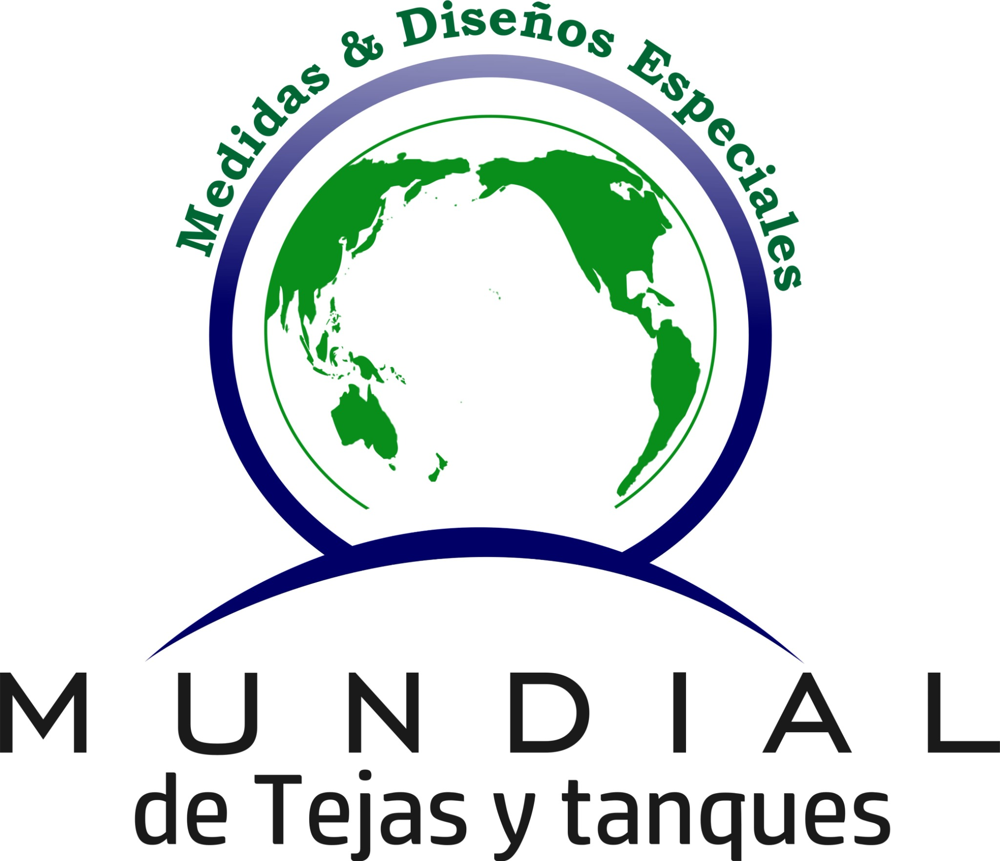
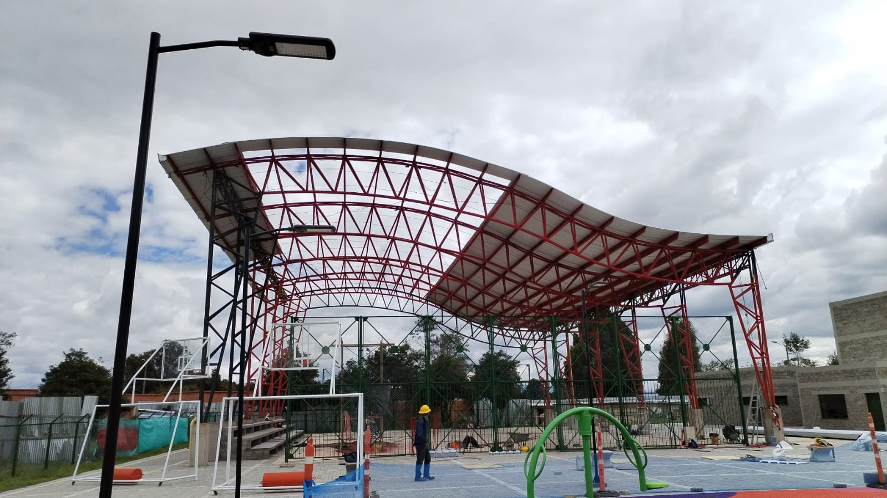
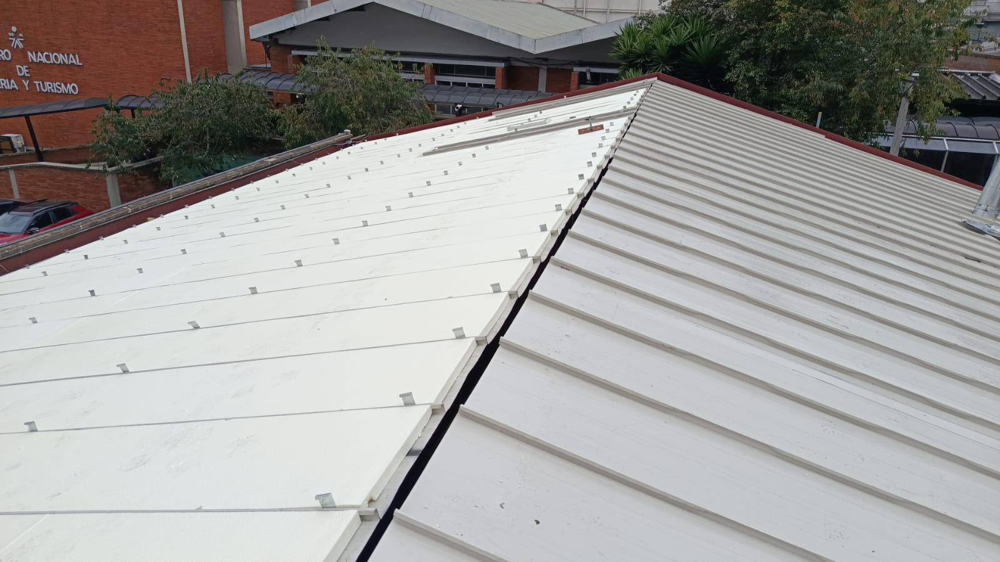
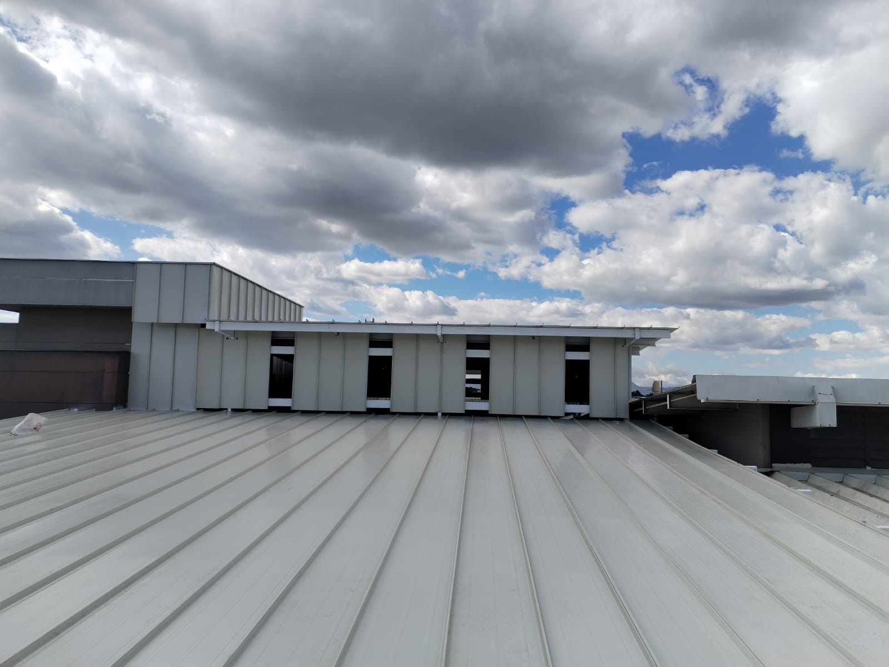
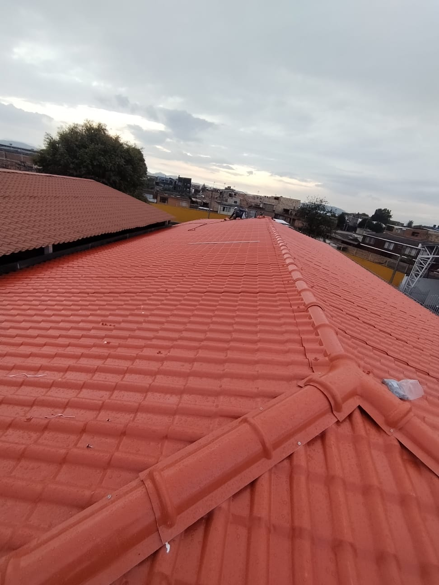
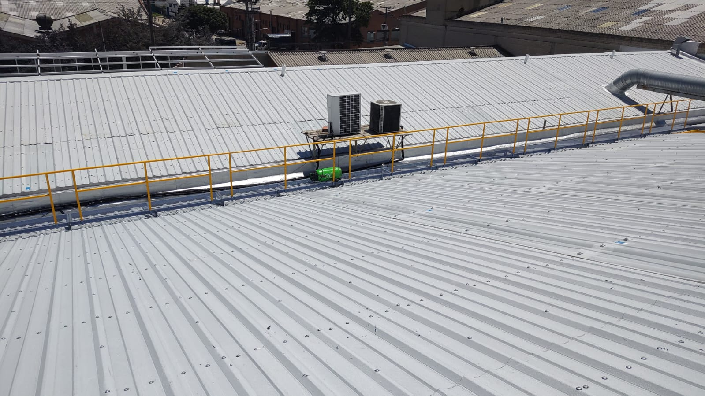

Asesoría especializada
Revisamos las condiciones de tu proyecto y te orientamos sobre tejas, materiales, especificaciones y alternativas para cubiertas.


Asesoría · Suministro · Instalación
En Mundial de Tejas y Tanques te acompañamos desde la elección del material y la cotización hasta la instalación y el seguimiento de tu obra.
Una decisión bien asesorada
En Mundial de Tejas y Tanques asesoramos proyectos de cubiertas en Bogotá. Escuchamos las necesidades de cada obra para recomendar tejas, materiales y especificaciones adecuadas, con acompañamiento cercano, respuestas claras y seguimiento durante el proceso.
Descubre cómo te acompañamos →Soluciones para cubiertas
Puedes contar con nosotros para una etapa puntual o para coordinar la solución completa.
Revisamos las condiciones de tu proyecto y te orientamos sobre tejas, materiales, especificaciones y alternativas para cubiertas.
Preparamos una propuesta acorde con las cantidades, características y necesidades reales de la obra.
Comercializamos tejas y materiales para cubiertas residenciales, comerciales e industriales.
Coordinamos la mano de obra y los procesos necesarios para ejecutar la solución de cubierta contratada.
Mantenemos una comunicación cercana y acompañamos el avance para facilitar una correcta ejecución.
Experiencia que se ve
Hemos participado en proyectos con suministro de tejas y materiales, mano de obra, instalación y asesoramiento especializado.




Nuestro trabajo en acción
Desde la estructura hasta el acabado final, cuidamos cada etapa para entregar soluciones funcionales y bien ejecutadas.
Ver más en Facebook ↗
¿Tienes un proyecto en Bogotá?
Cuéntanos qué necesitas. Nuestro equipo te ayudará a revisar tejas, materiales, instalación y cotización.
Escribir al 310 486 4351 ↗